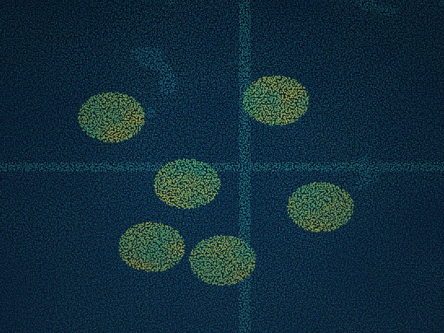

Recommended system
Sequoia is built for this.
Long-standoff, wide-area collection at up to 900 km² per hour from the flight levels.

Pipeline and facility survey across vast, remote terrain.

Linear assets stretch across hundreds of miles of difficult, remote ground that is slow and costly to survey conventionally.
Efficient wide-area and corridor coverage at survey-grade accuracy, with finished deliverables for engineering and compliance.
Corridor-mode scanning follows pipeline routes without weaving the aircraft.
~5 cm typical vertical precision for engineering-quality models.
Cover long, inaccessible corridors in a single high-altitude flight.
Long-standoff, wide-area collection at up to 900 km² per hour from the flight levels.
Book a call to scope your project, or request representative point clouds for review.